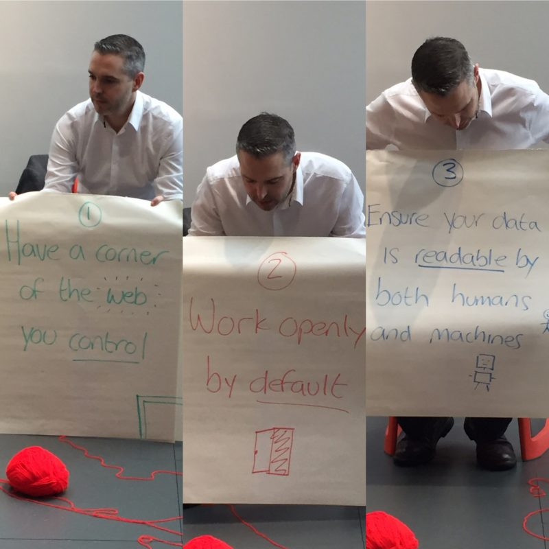

Nicola Whitton gave an EdLab workshop which broke down the concepts and tools needed to create games in a very engaging way. The approach was not dependent on the delivery mechanism of the game and so could include, board games, card games, apps or computer games.
Creative Space

Noisy Toys bridge the gap between Computing and Music PGCE Students
The EdLab team brought together the PGCE Students from Music and Computing and the Steve Summers from Noisy Toys explore cross curriculum possibilities and generate new ideas for workshops.
Beyond the uses that the teacher trainees put these ideas to in their future lessons out in schools, we also asked inter-subject groups to work together to plan after school sessions for Year 6 /7.


EdLab launches MMU Funologists
MMU Funologists is a team project involving students and staff from any MMU department who are using ‘serious’ play to help STEAM (Science, technology, engineering, arts and maths) learning happen. We love tinkering, making things and chatting about it. Come and play, seriously!
When we play interesting things happen. Lots of research shows that this is a key way to find out more about the world and solve problems. So if play is so good. Why don’t we do more of it?
- What Next: Our first event is a Creative Space Seminar with Mark Peace
- When: Wed 2nd March 11:30-13.00pm – Book here
- Where: Lecture Space 3 MMU Brooks Building
- Why: To have fun, seriously! We will share opportunities for you to get involved in game or making based learning in different settings including primary, secondary, home education and volunteer run youth clubs.


Doug explores Digital Skills for Open Education
We were very happy to welcome Doug Belshaw to facilitate a Creative Space as part of our EdLab series. Not only does he know his stuff in the area of digital skills and working openly in education, he also has a great participatory approach to delivering workshops and is a bit of dude too.

Top 5 Tips for Promoting your Educational Project
You have a fantastic, fun and new idea to bring to the world of Education, but how can you make sure that it gets the audience that it deserves? In a world where media surrounds us, sometimes it can be tricky to get our message across to the right people. In this session we share 5 top secret tips to cut through the noise and promote your project right into the minds of your target audience.
- EdLab- Picking up more tips from students!
-

- EdLab- Picking up more tips from students!

-

- EdLab- Picking up more tips from students!

Part Two – Creative Visualisation Workshop – Exploring ideas
This blog post details some of the processes and outputs from the Creative Spaces workshop with guests Belay from MRSN and Sara from CAN. In part one of the workshop Manchester Refugee Support Network and Community Arts North West gave us background on creative educational projects with Refugees. We then moved on to the more active and creative part of the session where students generated idea to solve the challenges.


Part One – Creative Visualisation Workshop – The need to support Refugees in Manchester
Input from the Community Partners
The workshop was started by Belay from Manchester Refugee Support Network who set us some challenges to solve, which would add to the projects they are already doing.
Sara Domville from Community Arts North West then lead activities on Creative Visualisation using the challenges set for us by MRSN. The key question was how can we use those skills to bring innovation to support that existing work?


{kind=link}
{kind=link}
{kind=link}
{kind=link}
{kind=link}
There are already activities which are co-ordinated by MRSN. We started to explore ideas of how MMU students could add to this.